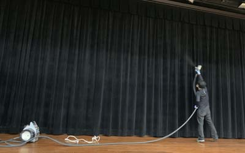
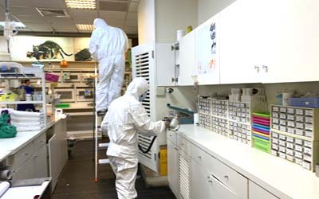
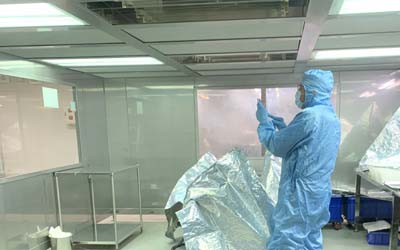

| 細菌消毒目的是要將微生物所引起對人類與環境之危害去除,但各種微生物,對藥劑的作用有很大的差異,雖然有部份消毒用劑是可殺死所有微生物,但其毒性對人体也產生很的危害,因此良好專業的消毒需要有微生物與毒物學的基礎.而消毒主要 五大要件為:細菌病毒總類,消毒劑強度,與細菌接觸時間,消毒之方法,消毒時之壓力溫度.除此外還須能夠保持長效,又不影響人體之健康. |
| 消毒不是針對人,而造成人體傷害,而是針對有害菌種,基本觀念是殺菌非殺人,韓國就曾不當使用消毒方法,造成百條人命,及600多人有不可回復之後遺症 |
| 任何的霧化殺菌消毒劑使用時都不能有人在現場,任何能殺死空氣中細菌,不管是氣體.水霧..也會殺死我們肺部中細胞,造成纖維化.發炎. |
| 以本公司經驗,曾有一家五星級坐月子中心其嬰兒室Baby有上呼吸道感染問題,請我們過去查看,然而我們在其室內就見到用次氯酸水使用霧化器.加濕消毒.經告知方不可如此使用,此間嬰兒室上呼吸道症狀就消失,在選擇產品時,千萬別聽信對人體無害產品,重要是使用方法要正確才會無害. |

| 第一級滅菌(Sterilzation)(殺菌)適用於無菌處理,如手術刀.並且包含了細菌芽胞完全死滅,使用範圍以器具,藥品..為主,密封之物品有保存期限 |
| 靜菌(Microbiostasis):微生物控制停止增長,最常見的是有效性碳素缺乏時 |
| 防腐(Preservation):抑制細菌生長,而細菌通常是不死亡的. |
| 衛生處理(Sanitize)它是去除灰塵或污垢,或是有機物,減少微生物之數量.也是物品滅菌.殺菌前必需經過的處理過程 |
| 抗菌防霉(Antimicrobial and Antifungal)消毒是一個很廣範的名詞,因此在消毒作業上必需針對不同場所.消毒物件.微生物種類..等做一調查,除此外在消毒藥劑之選擇及施作方法也有一套規範流程.自古以來人類就了解許多抗菌防腐的知識,從四千多年前古埃及的木乃伊,到日常使用糖.鹽巴.或用燻蒸法來保持食物的儲存期,或使用酒處理傷口,以及中國古代使用的備長炭或竹炭(經日本研究發揚光大),在英國外科醫生李斯特石碳酸消毒空氣及物品,更開啟了消毒技術,以上種種都是 抑制微生物生長的方法. |

| 消毒（Disinfection）:使用化學或物理.生物等法,消滅大部份微生物，使常見的致病細菌數目減少,可是部份細菌孢子、病毒、結核桿菌真菌等都可能沒有全部消滅,因此消毒到多少菌量是安全值?這部份目前難以去定義,因為每一地方現場狀況完全不同,需要注意的是,在許多產品在實驗室殺菌力可達99.99%,但不代表它可使用此(殺菌力)字意做為廣告用詞. |
| 殺菌(Sterilization）它是可讓所有細菌.孢子、病毒、完全消滅,通常會用在醫療生化器械.防護等裝備,這些都有嚴格之規定 |
| 因此對於我們一般人認為消毒就是將微生物殺死,其實不盡然是如此,因為消毒在微生物學(microbiology)上,可是區分多種等級,並且有嚴格的規定.所以廣義的消毒則是指使用物理或化學方法將微生物抑制或殺死外環境中及機體體表的微生物.以防止微生物散播或傳染的手段, |
| 近年來許生物工程或食品加工標榜產品於無菌室作業,基本上並不是真正無菌室,而是低菌室.真正之無菌室其維護費是非常昂貴的 |